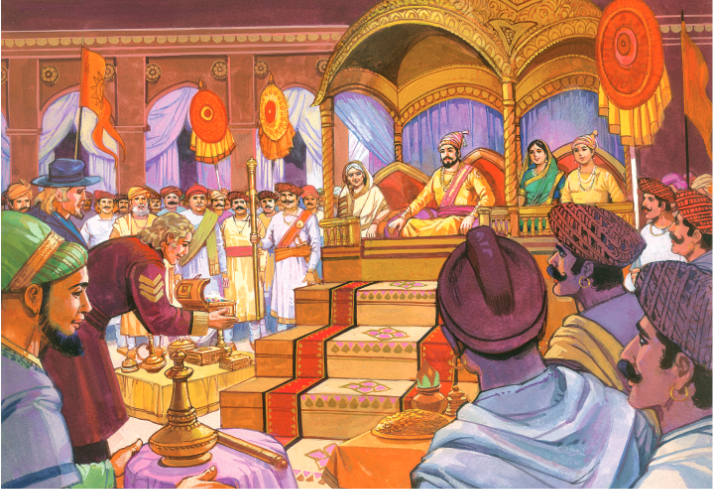
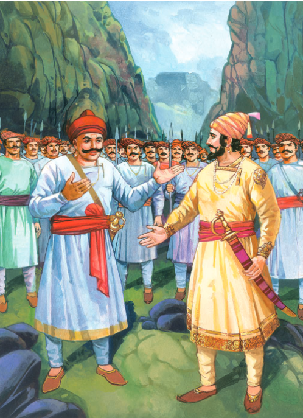
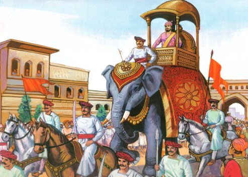
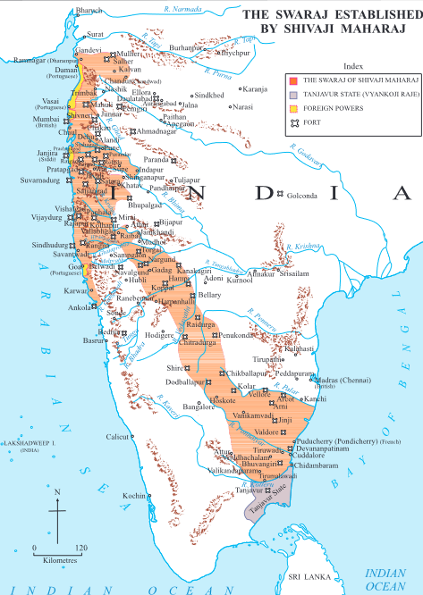
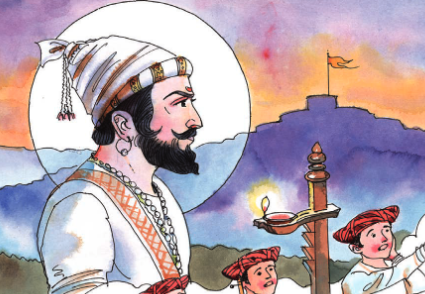

THE RAIGAD CORONATION

The Raigad coronation is a important moment in the history of the
Maratha Empire, symbolizing the rise of Shivaji Maharaj as a sovereign
ruler and the establishment of a powerful dynasty. It took place on
June 6, 1674, atop the majestic fortress of Raigad in present-day
Maharashtra, India.


After years of relentless struggle against the oppressive Mughal and
Adilshahi forces, Shivaji Maharaj had carved out a formidable kingdom
in the heart of the Deccan Plateau. With his vision of Swarajya
(self-rule) driving his every action, Shivaji set his sights on
formalizing his authority as an independent monarch.
On the chosen day, amidst much pomp and ceremony, Shivaji ascended the
throne at Raigad, surrounded by his loyal subjects, ministers, and
generals. The coronation ceremony was a grand affair, steeped in
tradition and symbolism, marking the culmination of Shivaji's lifelong
dream of establishing a sovereign Maratha state.

As the crown was placed upon his head, Shivaji Maharaj became
Chhatrapati Shivaji, the first Chhatrapati (emperor) of the Maratha
Empire. His coronation not only signified the dawn of a new era for the
Marathas but also served as a powerful assertion of their identity and
sovereignty in the face of external threats.

The Raigad coronation remains a defining moment in Indian history,
representing the triumph of courage, resilience, and the indomitable
spirit of the Maratha people. It stands as a testament to Shivaji
Maharaj's visionary leadership and enduring legacy, inspiring
generations with its tale of valor and determination.